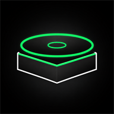

TurntableGITHUB PAGES CONTROLLER
Control the music
from your phone.
Set up direct Spotify control on this device. No laptop or LAN server is needed.
Sign in to Spotify
Sign in with the Spotify account you want to control. The button opens the Developer Dashboard after login.
Sign in & open Dashboard ↗Copy the Redirect URI
Copy this address now. You will paste it into your Spotify app settings in the next step.
https://peekabu411.github.io/Create or choose an app
Create a Web API app or open an existing app. Complete only the fields marked with a red asterisk, including the Redirect URI you copied above.
↗Can’t find Create app? Zoom out until the dashboard header is visible — the button appears at the top.
Copy the Client ID
Open your app settings and copy its Client ID. Do not copy or paste the Client Secret.
↗Paste the Client ID
Return here and paste the Client ID from your Spotify app.
Connect Spotify
Approve access in Spotify. Turntable stores the connection only on this device.
turntable
♫
← swipe to skip →
PLAYING FROM YOUR PC
Nothing playing
Open Spotify on your PC and start a song
Lyrics will appear here.
0:000:00
YOUR LIBRARY
Playlists
Drag to reorder
Choose this tab to load your Spotify playlists.
SPOTIFY CONNECT + PHONE
Devices & pairing
REMOTE CONNECTIONChecking connection
Contacting the PC and Spotify...
Recommended actionWait for the current connection check to finish.
Last sync —Playback cache —
ReadySyncingCachedCooldownOfflineWaiting
Looking for Spotify devices...
PAIR ANOTHER PHONEOpen this address
PAIRING PIN••••
REMOTE SETTINGS
Controls
REMOTE CUSTOMIZATIONAppearance & controls
LAYOUTPlayer structure
ALBUM
CONTROL
DISPLAY
BACKGROUND
PLAYBACKProgress & controls
VOLUME WEIGHT
LYRICSStyle & timing
LYRIC STYLE
LYRIC BG
LYRIC SIZE
LYRIC OFFSET
INTERFACEOn-screen guidance
HINTS
DISPLAYFit & readability
SCREEN FIT
UI TEXT
Turntable is not affiliated with, endorsed by, or sponsored by Spotify
50%Swipe down in the center to show the top keys; swipe up to hide them.
Turn your device sidewaysLandscape provides the full dashboard layout.
FULLSCREEN RECOMMENDEDUse the complete display
Enter fullscreen to hide the browser controls and prevent accidental page zoom.
VISUAL PRESETS
Manage presets
SETTING GUIDE
Setting information
UPDATE LOG
Latest 10 updates
- ver(I.9.5)Added a right-aligned, continuous song-and-artist marquee for Lyrics mode, a subtle top-bar arrow, and refined setup dashboard shortcut styling and guidance.
- ver(I.9.4)Stable release: playlist organizing now keeps the screen fixed while dragging, auto-scrolls only at the top and bottom edges, shows drag guidance, and precisely honors the divider between playlists. Also includes the recent lyrics fallback, organizer refinements, and a clearer six-step Spotify setup.
- ver(I.9.3)Stable release: lyric-provider compatibility with clear unavailable status, vertical playlist insertion gaps, smooth drag-and-drop reordering, and a single-column update log.
- ver(I.9.19)Restored the original static two-line Now Playing title display.
- ver(I.9.18)Made playlist drops smoother and replaced card highlights with a precise insertion gap.
- ver(I.9.17)Matched the Android visual preset set while retaining Pages-only custom presets.
- ver(I.9.14-I.9.16)Refined playlist counts and card text, then added slow scrolling for Now Playing titles longer than two lines.
- ver(I.9.13)Restored the original playlist layout and added a smooth floating album-cover preview while reordering.
- ver(I.9.12)Added device-local playlist pins and drag-to-reorder organizing without changing Spotify.
- ver(I.9.11)Extended the hidden top-tab reveal target upward beyond the controller edge for easier one-touch access.
- ver(I.9.10)Expanded the invisible Now Playing top-tab reveal target while preserving the original bar size and position.
- ver(I.9.09)Fixed GitHub Pages diagnostics with live direct-API request counts and a clear direct connection status.
- ver(I.9.08)Added the complete step-by-step Spotify dashboard setup, Redirect URI copy action, and consistent setup design.
Open this tab to read local diagnostics.